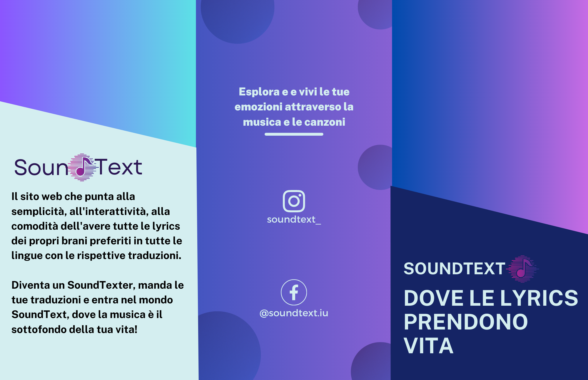

Abstract
SoundText è un sito web innnovativo che offre agli appassionati di musica la possibilità di accedere facilmente ai testi delle canzoni e alle immediate traduzioni in molteplici lingue. Con SoundText gli utenti possono immergersi nel mondo dei testi, esplorare le parole di canzoni meno conosciute e popolari, per scoprire sempre nuovi significati. Essendo ottimizzato per dispositivi mobili, consente agli utenti di potervi accedere ovunque si trovino.
Attraverso SoundText è possibile diventare dei SoundTexter, perché la sua natura collaborativa denota la possibilità che hanno gli utenti di contribuire al sito inviando le proprie traduzioni dei testi musicali. Questo permette una maggiore diversità linguistica e una più ampia comprensione degli utenti di tutto il mondo.
SoundText, dove le lyrics prendono vita.
Project Management Plan
1. Benchmarking
Obiettivi
Gli obiettivi di SoundText sono molteplici: fornire un'ampia collezione di testi musicali e traduzioni in diverse lingue, costruire una comunità in cui gli utenti possono inviare le proprie traduzioni e lasciare commenti e recensioni sulle traduzioni presenti (funzione che potrà essere implementata e non ora presente), offrire un'esperienza utente intuitiva e piacevole per via anche di una grafica accattivante.
Altri obiettivi sono sicuramente il puntare alla qualità delle traduzioni (ciò potrebbe comportare la verifica e l'approvazione delle traduzioni inviate dagli utenti, al fine di mantenere gli standard elevati), ma anche l'integrazione con servizi musicali come Spotify, per fornire un'esperienza integrata e ancor più coinvolgente.
Target
Il target di SoundText comprende gli appassionati di musica di tutte le età e soprattutto provenienti da diverse parti del mondo.
Il sito mira a soddisfare le esigenze di coloro che desiderano comprendere i testi musicali e le loro traduzioni.
Pertanto SoundText si rivolge a un pubblico vasto e diversificato, che comprende sia appassionati di musica di lunga data che nuovi ascoltatori propensi a scoprire nuovi artisti e generi musicali.
Competitors
I siti web che offrono esperienze d'utilizzo analoghe a SoundText sono molteplici considerando il pubblico cui sono rivolti. Alcuni possibili competitor potrebbero includere Genius, AZLyrics, Letras.mus.br.
Genius è un sito web che offre testi, annotazioni, spiegazioni e traduzioni ed è noto per la comunità di utenti che contribuiscono con le annotazioni e interpretazioni.
AZLyrics fornisce una raccolta di testi musicali in diverse lingue cui gli utenti possono far riferimento.
Letras.mus.br è un sito brasiliano che offre testi in portoghese oltre ad altre lingue.
La presenza di competitor non significa necessariamente che questi offrano le stesse caratteristiche e funzionalità di SoundText. La sua immediata differenza distintiva è la sua natura collaborativa, la sua interattività, la sua grafica funzionale e l'avvio di una possibile comunità di amanti di musica.
2. Struttura e layout
La struttura di SoundText prevede una landing page dalla quale gli utenti vengono reindirizzati alla home page.
La homepage presenta il logo del sito e una barra di navigazione che include le seguenti sezioni: Artisti, Canzoni, Diventa un SoundTexter e una barra di ricerca. In basso è presente il footer con gli indirizzamenti alle pagine social Instagram e Facebook.
Nella sezione "Artisti" gli artisti sono suddivisi in un elenco alfabetico, presentati in una tabella a 2 colonne. Alla fine della tabella è presente una numerazione per la navigazione tramite paginazione.
Nella sezione "Canzoni" per ogni singolo o album dell'artista viene visualizzata un'immagine, il nome dell'artista e il testo originale della canzone. È presente un pulsante che consente di selezionare la lingua e ottenere una traduzione immediata. Inoltre, viene incorporato un lettore di Spotify relativo alla canzone selezionata.
Nella sezione "Diventa un SoundTexter" è presente un modulo in cui gli utenti possono compilare i dati per inviare una traduzione di una canzone. È presente anche un editor di testo che consente di formattare il testo con sottolineature, testi in grassetto o corsivo, e così via.
Architettura ad albero

Wireframe


Look and feel
Fonts
I font impiegati in SoundText sono due: Poppins e Mitr. Entrambi caratterizzati da un design semplice e pulito contribuiscono a creare un'esperienza di lettura agevole e piacevole per gli utenti del sito. Essi facilitano la lettura e la fruizione dei testi e delle traduzioni musicali.
Il font Poppins è ampiamente apprezzato per la sua versatilità e leggibilità. È un carattere sans-serif moderno e geometrico, con linee pulite e angoli arrotondati. La sua struttura bilanciata e leggera lo rende ideale per essere utilizzato in titoli, sottotitoli e altri elementi di enfasi nel design.
Il font Mitr è anch'esso un carattere sans-serif, noto per la sua leggibilità e chiarezza. È caratterizzato da forme semplici e curve morbide, che lo rendono adatto per il corpo del testo e il contenuto principale del sito. Mitr può fornire una buona leggibilità anche a dimensioni di testo più piccole, garantendo una visualizzazione confortevole per gli utenti.
Colori
La grafica di SoundText è caratterizzata da un design pulito e dai colori vibranti. La nav bar trasparente consente di mettere in risalto lo sfondo animato, che presenta una varietà di colori sfumati e gradienti. Ad ogni refresh della pagina, lo sfondo cambia colore e sfumatura, creando un effetto visivo dinamico e coinvolgente. I colori predominanti nello sfondo sono il giallo, l'arancione, il rosa, il rosso e il viola, nelle loro diverse sfumature. Questi colori vivaci possono creare un'atmosfera energica e accattivante, contribuendo a trasmettere la passione e l'emozione della musica.
Per garantire una buona leggibilità, i testi sono mantenuti in colore nero su uno sfondo sfumato. Questo contrasto tra i colori vivaci dello sfondo e il testo nero crea un effetto visivo nitido e favorisce una chiara comprensione del contenuto. L'uso di una grafica pulita e dei colori vibranti contribuisce a creare un'esperienza visiva coinvolgente su SoundText, che si adatta alla natura dinamica e multilingue del sito, senza sacrificare la leggibilità e la facilità d'uso per gli utenti.
3. Linguaggi e strumenti
I linguaggi utilizzati sono HTML, CSS e JavaScript. Gli strumenti impiegati sono diversi, per alcuni dei quali è fondamentale dare le licenze.
▪️CodePen: piattaforma dalla quale ho ricavato lo sfondo e adattato al mio sito
▪️Lucid: software per diagrammi che ho impiegato per la struttura ad albero del sito
▪️Font Awesome: realizzazione delle icone
▪️Google Analytics: misuratore e strumento d'analisi per le visualizzazioni del mio sito
▪️Canva: realizzazione della brochure, post sui social e favicon
▪️Bootstrap: libreria che ho impiegato enormemente per la creazione degli elementi del sito
▪️Getty Images: agenzia di immagini da cui ho ricavato le immagini, cui però è fondamentale riconoscerne la licenza
▪️Spotify: creazione degli embedded delle canzoni e selezione di alcune immagini
▪️Tiny: realizzazione degli stili editor nel form della sezione Diventa un SoundTexter
▪️Visual Studio Code: editor di codice sorgente per la realizzazione del sito
▪️Balsamiq: realizzazione del Wireframe
▪️Google Font: scelta dei font
▪️Adobe Color: scelta dei colori
▪️GitHub: pubblicazione di SoundText
▪️Angolotesti: selezione testi canzoni e traduzioni
Communication Strategy
1. Background
L'idea principale dietro la realizzazione di SoundText deriva dal volersi differenziare dai competitor, perché oltre a fornire un servizio di traduzione di testi in diverse lingue cerca di puntare sul concetto di partecipazione e sul poter diventare SoundTexter e di contribuire quindi alla realizzazione di una solida community.
Elemento su cui si punta in particolare è la grafica, ma anche la chiarezza e la semplicità, elementi per cui SoundText si contraddistingue. Il background animato e dai colori vivaci potrebbe essere stato scelto per richiamare l'energia e l'emozione associate alla musica stessa. La musica è un'arte che evoca emozioni e sentimenti, e lo sfondo di SoundText potrebbe riflettere quest'aspetto, cercando di trasmettere l'entusiasmo e la passione associate alla musica attraverso il suo design visivo.
2. Obiettivi comunicativi
Gli obiettivi comunicativi di SoundText in termini di comunicazione web sono:
üéØ Ottenere almeno 300 visualizzazioni
üéØ Ottenere almeno 25 followers sulla pagina Instagram in 24 ore dalla data di lancio (21 maggio 2023) e dei feedback su SoundText
Il tutto per creare interesse e un'esperienza user-friendly coinvolgente e visivamente accattivante per il pubblico target, spingendoli a visitare il sito e a scoprire di più, fino a diventare dei veri SoundTexter proponendo proprie traduzioni.
3. Target audience e messaggio
Il target audience di SoundText sono gli amanti della musica di diverse età e background linguistici che desiderano accedere alle lyrics dei testi musicali e alle traduzioni in molte lingue.
Utilizzando canali online come social media e attraverso altre modalità di promozione, il messaggio di SoundText è quello di offrire una piattaforma completa e collaborativa per esplorare e comprendere il significato delle canzoni attraverso i testi e le traduzioni, promuovendo l'accessibilità linguistica e la partecipazione degli utenti. Tutto per raggiungere il suo pubblico target, coinvolgendolo e stimolandone l'esplorazione e la condivisione delle traduzioni.
4. Promozione
SoundText sarà promosso attraverso il passaparola tra le principali piattaforme di messaggistica come Whatsapp e Telegram. Successivamente verranno utilizzate anche le piattaforme social online più diffuse, come Instagram, per raggiungere un pubblico più ampio e diffondere ulteriormente il messaggio di SoundText.
5. Valutazione dei risultati
Le metriche utilizzate per monitorare la crescita del progetto includeranno le visualizzazioni sulla piattaforma, con l'obiettivo di raggiungere almeno trecento visite. Google Analytics sarà utilizzato come strumento di monitoraggio per raccogliere i dati e le statistiche sulle interazioni degli utenti con il sito.
Brochure
Inoltre verranno utilizzate delle brochure per promuovere SoundText e diffonderne la conoscenza tra il pubblico. Questo strumento di marketing tradizionale potrà contribuire a generare interesse e attirare nuovi visitatori.

Successivamente verrà valutato l'impatto sui social media menzionati in precedenza, per esempio mediante i feedback ricevuti su Instagram e sul numero di follower (almeno 25 in 24 ore). L'obiettivo sarà soprattutto quello di sfruttare il potere del passaparola online.
Risultati
Feedback su SoundText ricevuti tramite l'area direct di Instagram
Obiettivo di almeno 25 followers in 24 ore raggiunto in data 22 maggio 2023